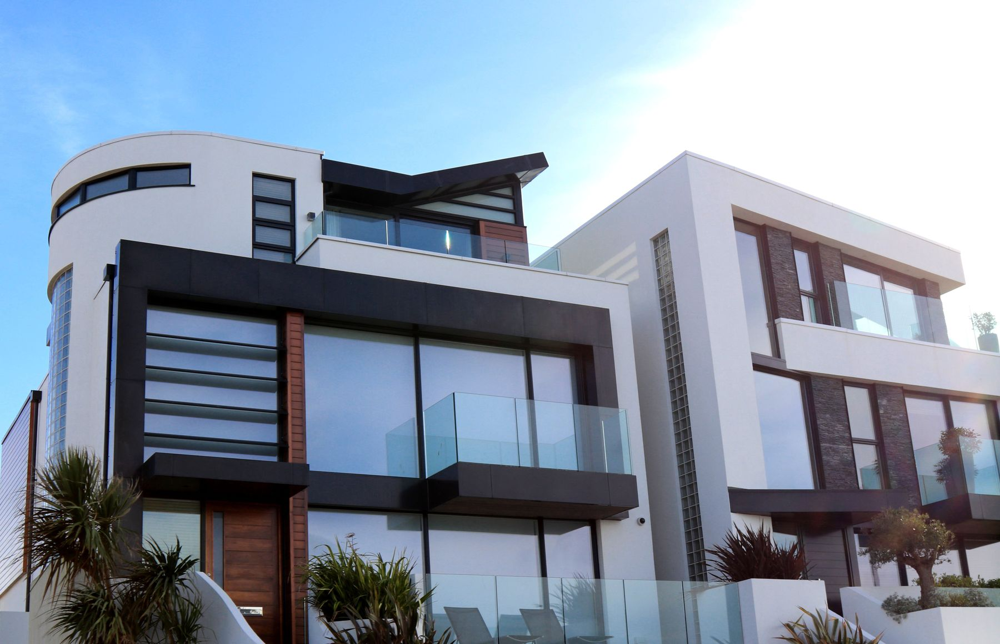
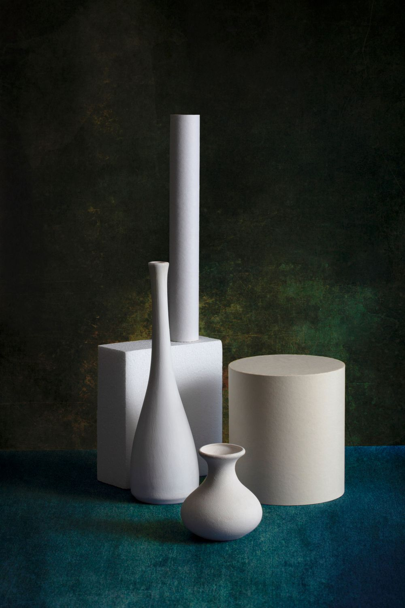
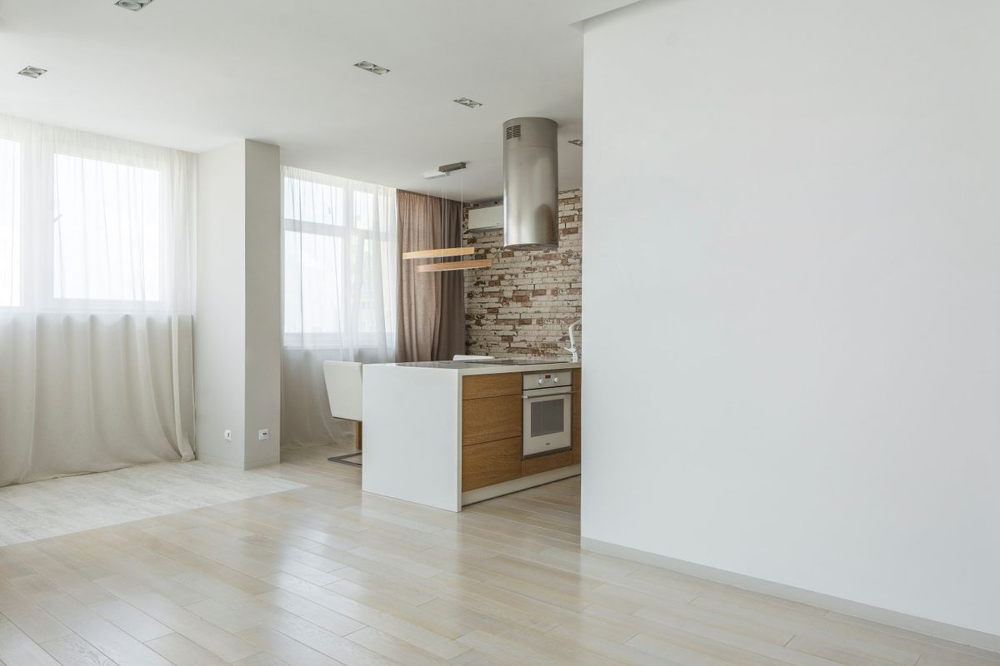
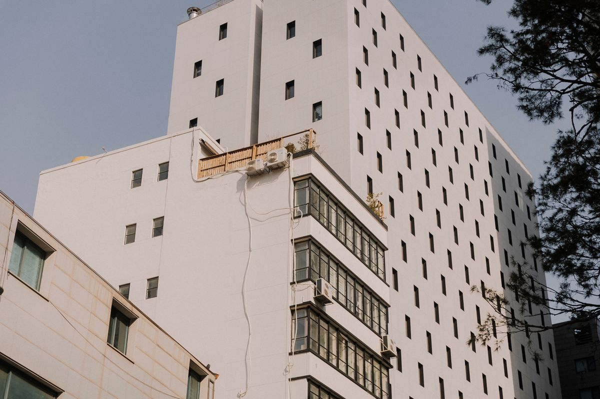
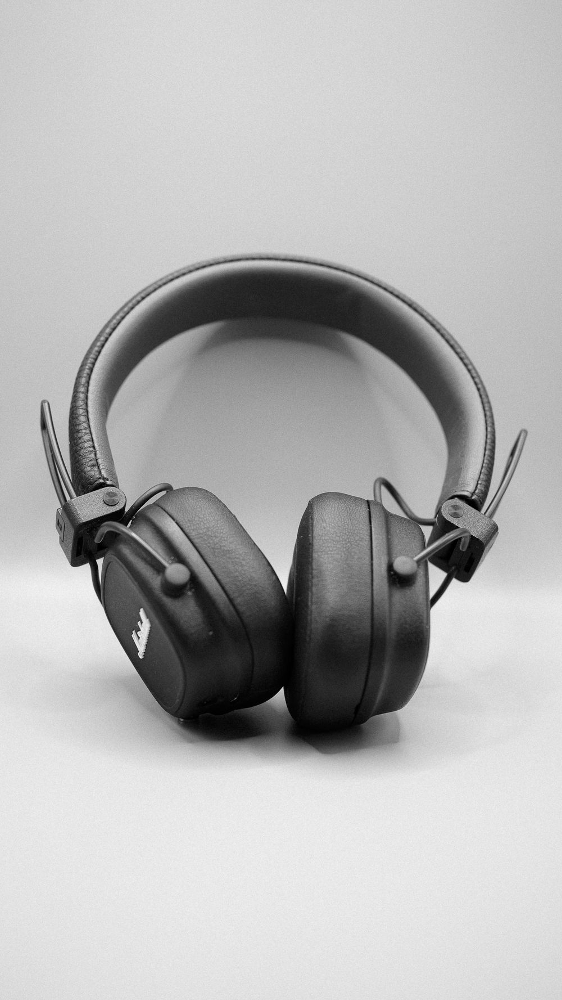
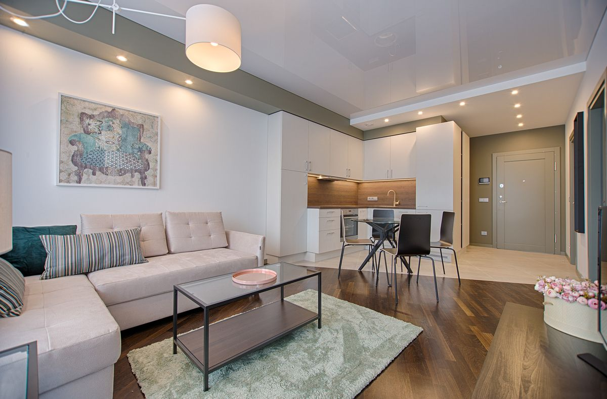

Architecture & interiors
Plan the viewpoints, surfaces and details that explain a space. Discuss access, light, styling and the story the images need to tell.
Photography for the things you make.
For architecture that deserves a second look. For objects whose details tell the story. A considered frame makes the difference.
Explore the contact sheet

Illustrative stock photography for this template. Image credits are included in the source package.
Look by subject. Open a frame to see the full image, then choose it as a starting point for your brief.
Architecture / exterior study
Objects / shape & texture

Interiors / natural light

Architecture / facade detail

Objects / product detail

Interiors / connected spaces
A frame is a decision.
Perspective, proportion, material and light. A clear brief gives every image a reason to exist.
Make a starting briefPlan the viewpoints, surfaces and details that explain a space. Discuss access, light, styling and the story the images need to tell.
Agree how scale, texture and form should come across, from a clean product frame to an arranged material study.
Define the intended channels, crops, delivery format and usage before a shoot. The right image needs the right context.
Choose a direction, add a reference and make an enquiry draft to keep. This page does not contact a studio.
Send this yourself when you contact your chosen photographer. Scope, availability, usage rights and fees still need agreement.
The subject, intended audience, where the images will appear, essential viewpoints or product details, and any practical constraints. A reference image can help explain a direction without prescribing an exact copy.
No. Framecraft is a website template. These are illustrative stock photographs, with source links and licences supplied in the package. Replace them with work you have permission to present before launching your own portfolio.
Choose “Use as reference” below a photograph or inside the viewer. It becomes part of your unsent enquiry draft. The page does not upload or send a photograph, and it does not grant a licence to use that image outside this template.
No. It is a local text draft you can download. No message is sent, no quote is generated and no booking is made. Contact a photographer directly to agree a real project.